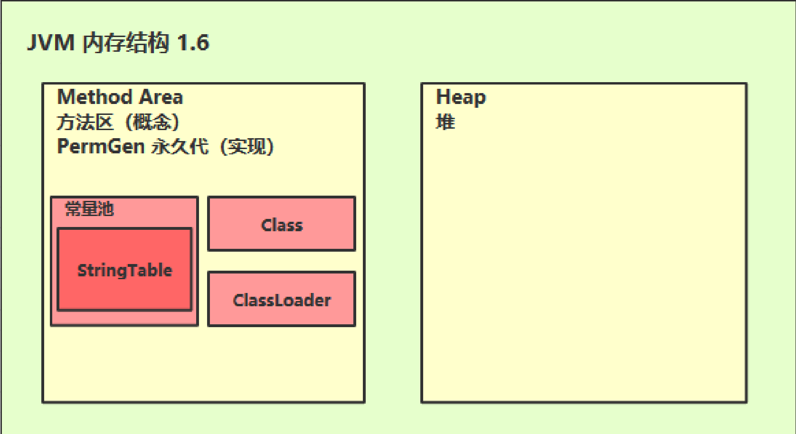
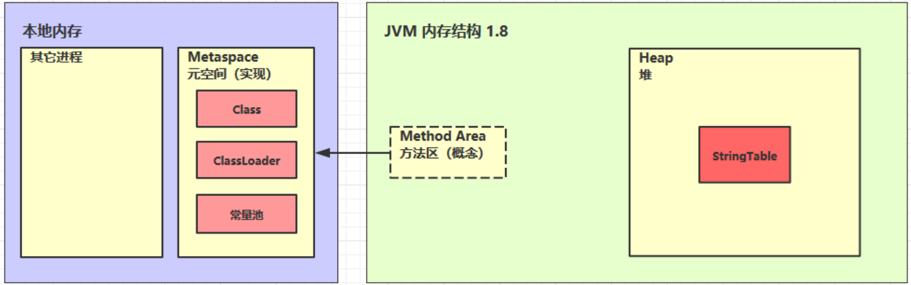

JVM
内存结构
程序计数器

定义
Porgram Counter Register程序计数器（物理上通过寄存器实现）
- 作用：记住下一条jvm指令的执行地址
- 特点
- 是线程私有的
- 不会存在内存溢出
虚拟机栈
定义
Java Virtual Machine Stachs（全称：java虚拟机栈）
- 每个线程运行时所需要的内存，成为虚拟机栈
- 每个栈有多个栈帧（Frame）组成，对应着每次方法调用时所占用的内存
- 每个线程只能有一个活动栈帧，对应着当前正在执行的方法
问题辨析：
1.垃圾回收是否涉及栈内存？
-不会，栈内存是方法运行时所占用的内存，方法运行结束会自行释放，不需要垃圾回收机制管理
2.栈内存分配越大越好吗？
-并不是，栈内存如果过大反而会使线程运行数目变少
3.方法内的局部变量是否线程安全？
-如果该变量没有逃离方法的作用范围，则线程安全，反之，需要考虑线程安全问题
栈内存溢出：
- 栈帧过多导致溢出
- 栈帧过大导致溢出
本地方法栈
给本地方法的运行提供运行的空间
堆
定义
Heap堆
- 通过new关键字，创建对象都会使用堆内存
特点
- 它是线程共享的，堆中对象都需要考虑线程安全的问题
- 有垃圾回收机制
堆内存溢出
堆内存诊断
- jps 工具
查看当前系统中有哪些 java 进程
- jmap 工具
查看堆内存占用情况 jmap - heap 进程id
- jconsole 工具
图形界面的，多功能的监测工具，可以连续监测
案例
垃圾回收后，内存占用仍然很高
-可以配合jvisualvm查看堆内存详细信息判断问题
方法区（Method Area）


方法区内存溢出
1.8 以前会导致永久代内存溢出、
- 演示永久代内存溢出 java.lang.OutOfMemoryError: PermGen space
- -XX:MaxPermSize=8m
1.8 之后会导致元空间内存溢出
- 演示元空间内存溢出 java.lang.OutOfMemoryError: Metaspace
- -XX:MaxMetaspaceSize=8m
运行时常量池
- 常量池，就是一张表，虚拟机指令根据这张常量表找到要执行的类名、方法名、参数类型、字面量
等信息
- 运行时常量池，常量池是 *.class 文件中的，当该类被加载，它的常量池信息就会放入运行时常量
池，并把里面的符号地址变为真实地址
StringTable 特性
- 常量池中的字符串仅是符号，第一次用到时才变为对象
- 利用串池的机制，来避免重复创建字符串对象
- 字符串变量拼接的原理是 StringBuilder （1.8）
- 字符串常量拼接的原理是编译期优化
- 可以使用 intern 方法，主动将串池中还没有的字符串对象放入串池
- 1.8 将这个字符串对象尝试放入串池，如果有则并不会放入，如果没有则放入串池， 会把串池中的对象返回
- 1.6 将这个字符串对象尝试放入串池，如果有则并不会放入，如果没有会把此对象复制一份，
放入串池， 会把串池中的对象返回
直接内存
定义
Direct Memory
- 常见于NIO操作时，用于数据缓冲区
- 分配回收成本较高，但读写性能高
- 不受JVM内存回收管理
分配和回收原理
- 使用了Unsafe对象完成直接内存的分配回收，并且回收需要主动调用 freeMemory方法
- ByteBuffer 的实现类内部，使用了 Cleaner （虚引用）来监测 ByteBuffer 对象，一旦 ByteBuffer 对象被垃圾回收，那么就会由 ReferenceHandler 线程通过 Cleaner 的 clean 方法调用 freeMemory 来释放直接内存
垃圾回收
如何判断对象可以回收
1.引用计数法
2.可达性分析算法
Java 虚拟机中的垃圾回收器采用可达性分析来探索所有存活的对象
扫描堆中的对象，看是否能够沿着 GC Root对象 为起点的引用链找到该对象，找不到，表示可以
回收
几种引用
- 强引用
- 只有所有 GC Roots 对象都不通过【强引用】引用该对象，该对象才能被垃圾回收
- 软引用（SoftReference）
- 仅有软引用引用该对象时，在垃圾回收后，内存仍不足时会再次出发垃圾回收，回收软引用对象
- 可以配合引用队列来释放软引用自身
- 弱引用（WeakReference）
仅有弱引用引用该对象时，在垃圾回收时，无论内存是否充足，都会回收弱引用对象
可以配合引用队列来释放弱引用自身
- 虚引用（PhantomReference）
必须配合引用队列使用，主要配合 ByteBuffer 使用，被引用对象回收时，会将虚引用入队，
由 Reference Handler 线程调用虚引用相关方法释放直接内存
- 终结器引用（FinalReference）
无需手动编码，但其内部配合引用队列使用，在垃圾回收时，终结器引用入队（被引用对象
暂时没有被回收），再由 Finalizer 线程通过终结器引用找到被引用对象并调用它的 fifinalize
方法，第二次 GC 时才能回收被引用对象
垃圾回收算法
1、标记清除
定义：Mark Sweep
- 速度较快
- 会造成内存碎片

2、标记整理
定义：Mark Compact
- 速度慢
- 没有内存碎片

3、复制
定义：Copy
- 不会有内存碎片
- 需要占用双倍内存空间

分代垃圾回收

- 对象首先分配在伊甸园区域
- 新生代空间不足时，触发 minor gc，伊甸园和 from 存活的对象使用 copy 复制到 to 中，存活的对象年龄加 1并且交换 from to
- minor gc 会引发 stop the world，暂停其它用户的线程，等垃圾回收结束，用户线程才恢复运行
- 当对象寿命超过阈值时，会晋升至老年代，最大寿命是15（4bit）
- 当老年代空间不足，会先尝试触发 minor gc，如果之后空间仍不足，那么触发 full gc，STW的时间更长
相关vm参数